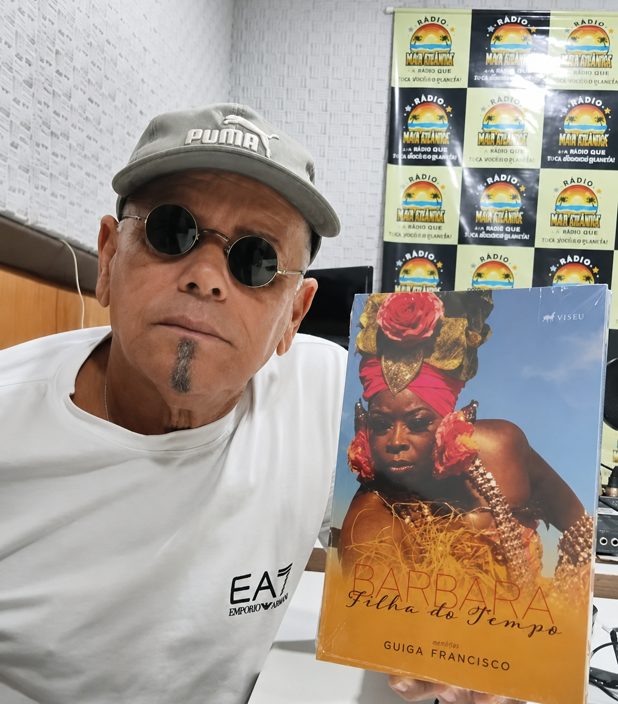
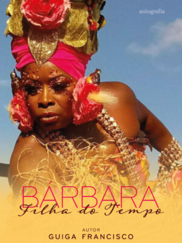
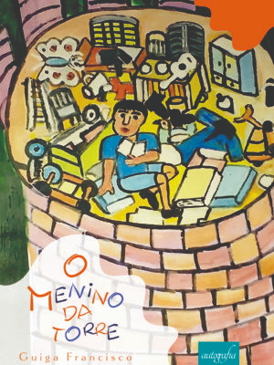
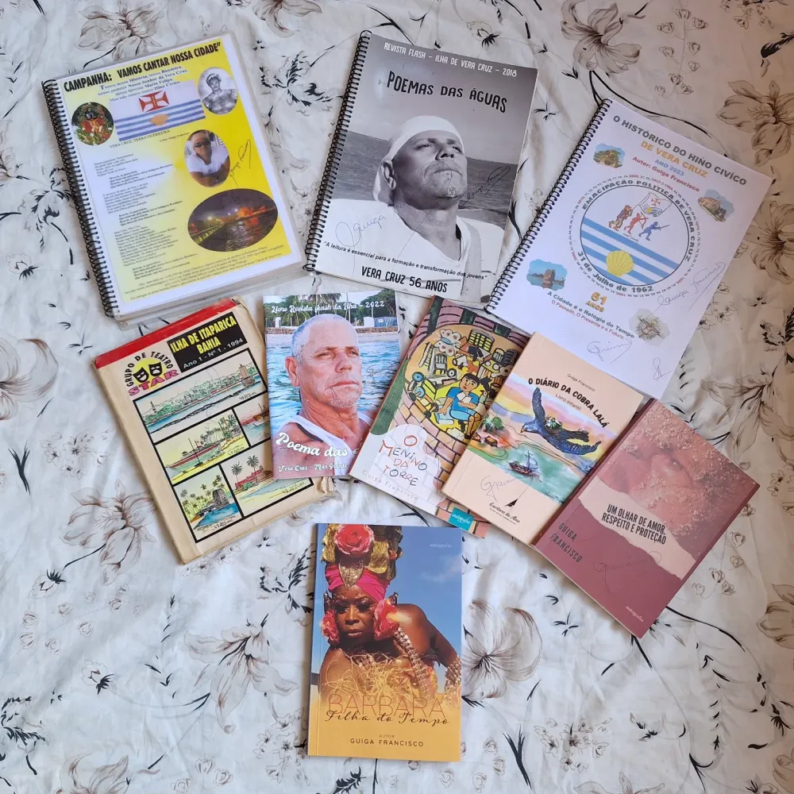

Educação e pesquisaProfessor · Pedagogo · Pesquisador
Silvano Sulzart - Secretário de Educação de Vera Cruz
Nascido e criado em Vera Cruz, Silvano transformou a
experiência vivida na ilha em pesquisa sobre educação,
memória, maritimidade e saberes comunitários, ajudando a
valorizar a cultura das águas da Ilha de Itaparica.
Docência nas águasMaritimidadeMemóriaEducação
Ler perfil
Sua trajetória reúne sala de aula, travessias, vida
escolar e relação com o mar. Na dissertação
Docência nas Águas, a travessia aparece como
experiência física e simbólica que influencia o trabalho
docente e a vida nas comunidades da ilha.
O estudo valoriza práticas ligadas à pesca, à mariscagem,
às embarcações, às festas, às religiosidades e aos
conhecimentos construídos no cotidiano, preservando
memórias que muitas vezes não aparecem nos registros
oficiais.
Literatura e artes visuaisEscritor · Artista plástico
Fernando Bernardes Souza
Escritor e artista plástico, Fernando Bernardes Souza
contribui para valorizar a arte, a memória e as trajetórias
ligadas à Ilha de Itaparica por meio da pesquisa, da escrita e
da produção artística.
Artes visuaisLiteraturaMemória da ilhaPesquisa
Conhecer o escritor e o livro
Em sua atuação como escritor e artista plástico, Fernando
Bernardes Souza aproxima linguagem visual, pesquisa e
memória. Seu trabalho ajuda a colocar artistas e histórias
da ilha em circulação, fortalecendo o reconhecimento da
produção cultural ligada ao território.
Agnaldo Manuel dos Santos: Uma ilha que ganhou o
mundo
O livro destaca a trajetória de Agnaldo Manuel dos
Santos e ajuda a projetar a presença de um artista
ligado à ilha para além de suas fronteiras.
A publicação também funciona como ponte entre arte,
identidade e pertencimento, convidando o leitor a conhecer
uma história importante da memória cultural da Ilha de
Itaparica.


Literatura, educação e culturaEducador · Artista · Escritor · Produtor cultural
Guiga Francisco
Morador de Vera Cruz, Guiga Francisco desenvolve uma trajetória ligada à literatura,
à educação, à memória e à produção cultural da Ilha de Itaparica. Seu trabalho reúne
livros, revistas, poesia, teatro e iniciativas voltadas à valorização da cultura local
e à formação de jovens.
LiteraturaEducação e juventudeMemória da ilhaHino CívicoProdução cultural
Conhecer a trajetória e as obras
Registros do Ilha Notícias Bahia apresentam Guiga como educador,
artista e escritor dedicado à valorização da cultura local e à formação de jovens.
Sua produção ajuda a guardar histórias, personagens e experiências ligadas a Vera Cruz
e à Ilha de Itaparica.
Uma produção que atravessa diferentes linguagens
Entre os trabalhos atribuídos ao autor estão as edições da Revista Flash da Ilha,
as coletâneas Poemas das Águas I e Poemas das Águas II, as obras infantis
O Menino da Torre e O Diário da Cobra Lalá, além de
Um Olhar de Amor, Proteção e Respeito. A reportagem também registra Guiga como
autor da letra do Hino Cívico de Vera Cruz.

O Menino da TorreA obra trabalha de forma poética temas como tempo, imaginação, superação e a capacidade de sonhar.
Bárbara, Filha do Tempo
Em 2025, Guiga apresentou Bárbara, Filha do Tempo, ampliando sua produção literária
com uma narrativa relacionada à identidade, à memória e à resistência feminina.
Bárbara, Filha do TempoO Menino da Torre

Livros, revistas e registros de uma trajetória dedicada à cultura da ilha.
Publicações recentes
Últimas notícias
Nenhuma publicação encontrada.Experimente outro termo ou selecione “Todas”.
Utilidade pública · calendário 2026
Defeso: o tempo de o mar respirar
Respeitar o período de defeso protege a reprodução das
espécies, fortalece a pesca artesanal e ajuda a garantir
alimento e renda para as próximas gerações de Vera Cruz.
Não é pausa sem motivo.É reprodução, renovação e futuro.
O que é o defeso?
É o período em que a pesca ou a mariscagem de determinadas
espécies fica proibida ou controlada para proteger fases
importantes do ciclo de vida, como reprodução, crescimento e
recrutamento dos animais. Cada espécie possui datas e regras
próprias.
Não capture nem retire do ambiente as espécies protegidas.
Não compre pescado sem origem regular durante o período.
Comércio e estoque só podem ocorrer nas situações
autorizadas e devidamente declaradas.
Compartilhe o calendário com pescadores, marisqueiras,
comerciantes e consumidores.
Datas oficiais
Calendário do defeso em Vera Cruz
Os cartões são destacados automaticamente quando a data atual
estiver dentro de um dos períodos de 2026.
Defeso em vigorCamarõesRosa, sete-barbas e branco. Calendário correspondente ao
trecho do litoral onde está Vera Cruz.
Defeso em vigorLagostasLagosta-vermelha, lagosta-verde e lagosta-pintada.
1º nov a 30 abr
Defeso em vigorRobaloProteção nas águas interiores e no litoral abrangido pela
norma.
Defeso em vigorGaroupa-verdadeiraEspécie protegida em águas jurisdicionais
brasileiras.
1º nov a 28 fev
Defeso em vigorPeixes recifaisCaranha, sirigado, garoupa-de-são-tomé e
badejo-amarelo.
Defeso em vigorCaranguejo-uçá: andadas de 2026Durante as andadas reprodutivas ficam proibidos captura,
transporte, beneficiamento, industrialização e
comercialização.
Consumidor também protege o mar
Antes de comprar, pergunte a origem do pescado. Durante o
defeso, prefira outras espécies liberadas e nunca estimule a
venda clandestina.